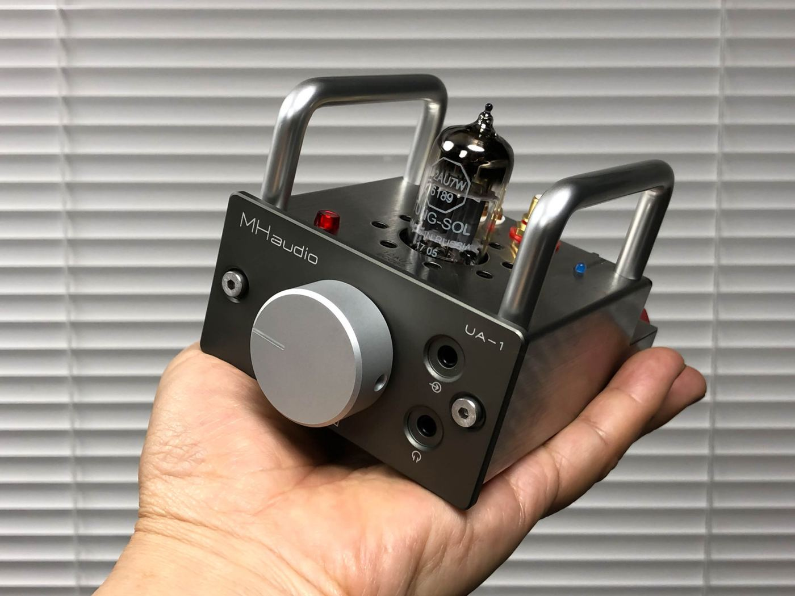
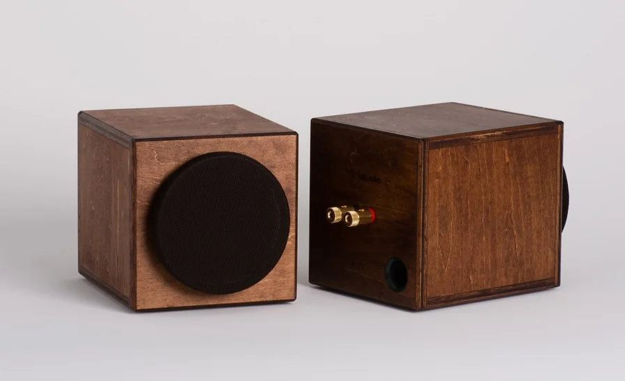
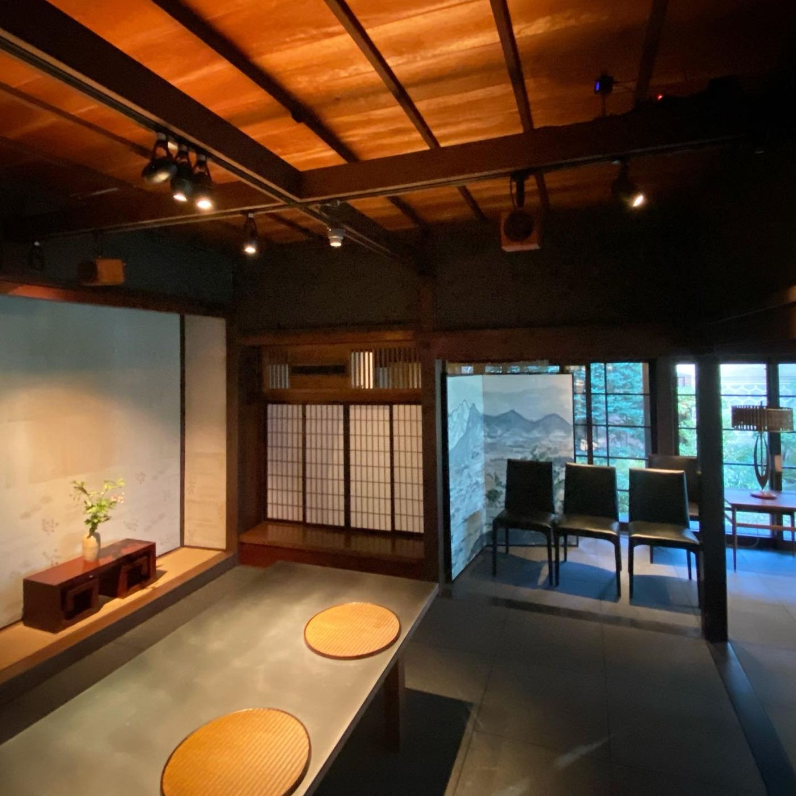
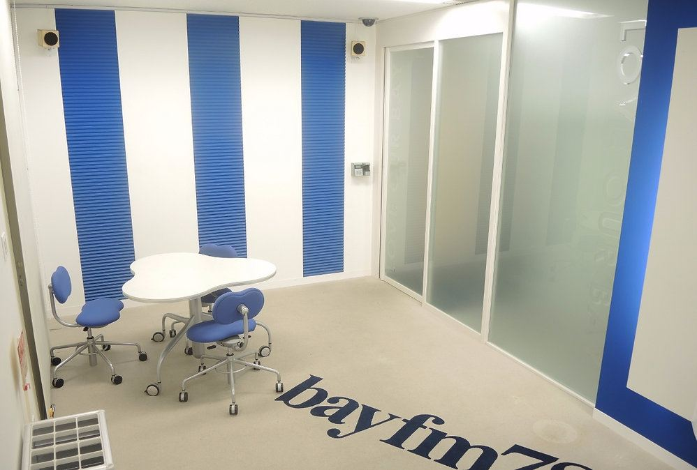
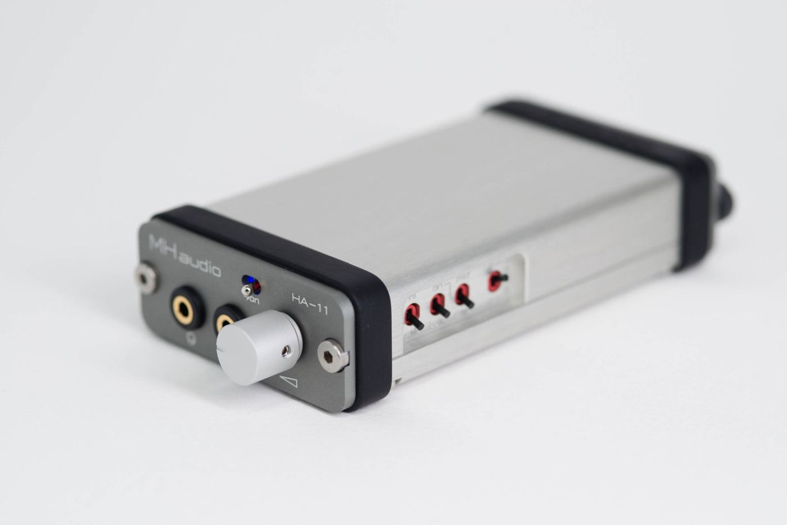
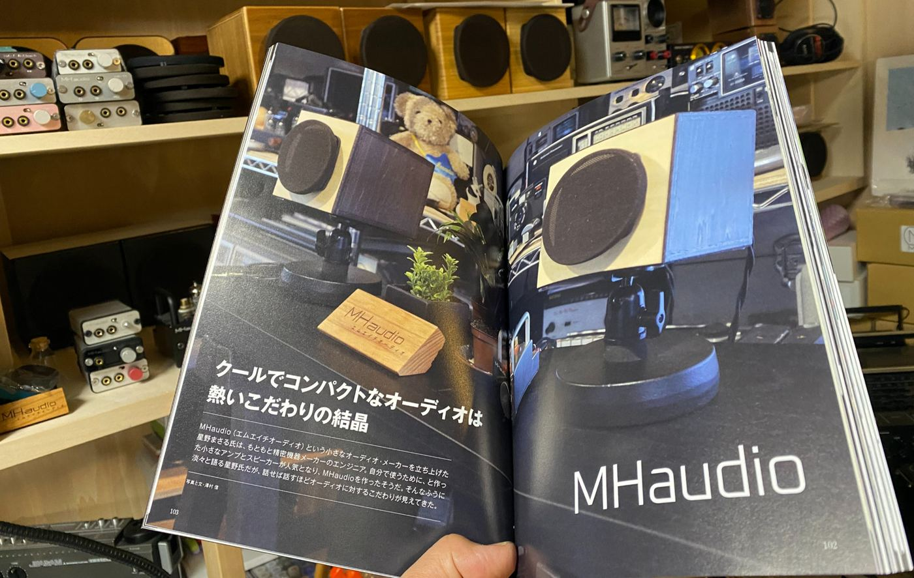
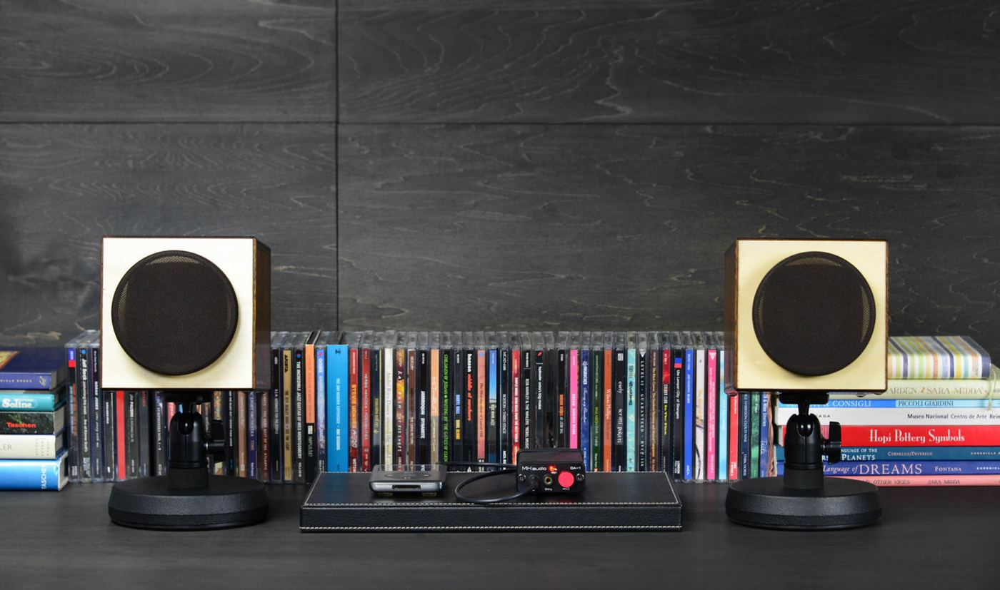
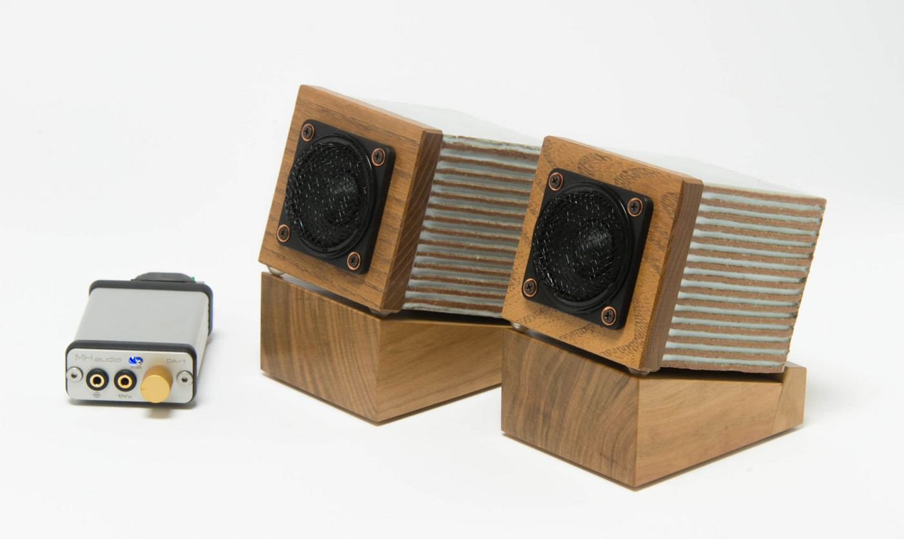
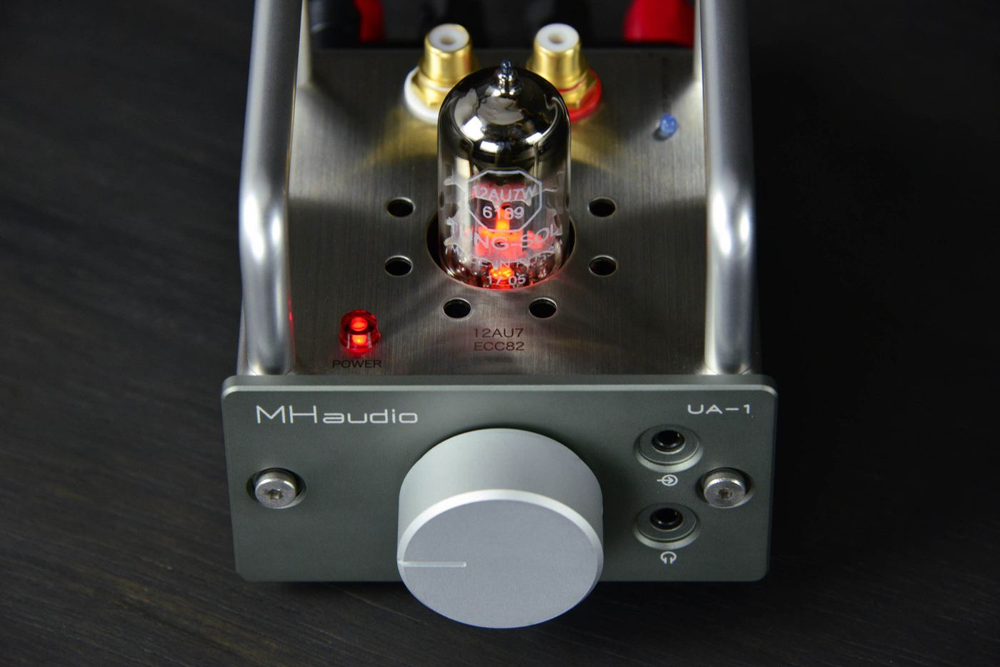
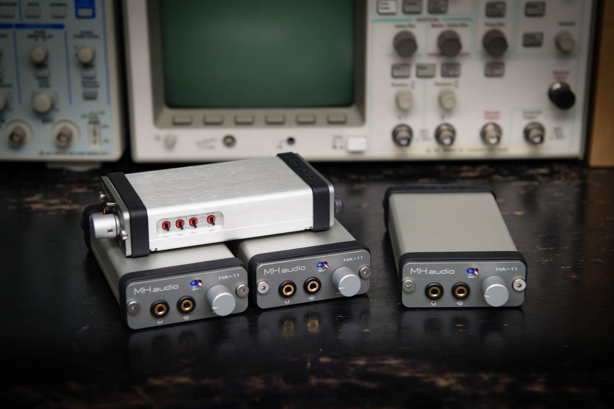

全室に、本物の音を置く
かたくらシルクホテル 様
長野県諏訪市の「かたくら諏訪湖ホテル」が2021年に全面リニューアルし、「かたくらシルクホテル」として生まれ変わりました。コンセプトは「シルクのようなおもてなし」。
リニューアルの計画段階から声をかけていただき、全室にスピーカー WAON のオーディオセットを採用いただきました。テレビの横に置ける大きさで、客室の過ごし方を変える一台です。
使っている製品スピーカー WAON のオーディオセット（全室）
大きく複雑なものが
良い音がする。
本当でしょうか？
CDジャケットほどのスピーカーと、
MH audio は、毎日の暮らしで
表紙の一台：小型の真空管ハイブリッドアンプ UA-1

知りたいところから
ページ番号を押すと、
箱の正面だけでなく上下左右からも音が広がるので、小さな音でも空間に行きわたります。
声や楽器ははっきり聴こえ、耳ざわりではない。お店では、主役のお客様と料理を支える音になります。
音の立ち上がりと収まりが良いので、にごりが少なく、長い時間流していても聴き疲れしません。
スピーカーはCDジャケットほど、アンプは手のひらサイズ。カウンターにも、テレビの横にも置けます。
本当にこのスピーカーが 鳴っているの？ 音を聴かれた方の言葉（スピーカーWAONの紹介文より）

その店の音は、
小さな箱から。
ホテルの客室、築200年の古民家の和食店、
かたくらシルクホテル 様
長野県諏訪市の「かたくら諏訪湖ホテル」が2021年に全面リニューアルし、「かたくらシルクホテル」として生まれ変わりました。コンセプトは「シルクのようなおもてなし」。
リニューアルの計画段階から声をかけていただき、全室にスピーカー WAON のオーディオセットを採用いただきました。テレビの横に置ける大きさで、客室の過ごし方を変える一台です。
使っている製品スピーカー WAON のオーディオセット（全室）

和食レストラン「万る山」 様
国の有形文化財の元造り酒屋を生かした和食店。オープンの準備段階から相談をいただき、店舗の音響を一緒に考えました。
スピーカーは2ペア。照明のレールを使って客席の上に1ペア、受付カウンターに専用スタンドで1ペア。木の箱は軽く、建物に負担をかけません。
小さな音でも隅々まで行きわたり、会話の邪魔にならない自然な音。
使っている製品スピーカー WAON ×4本／アンプ DA-1

ベイエフエム「bayfm78」 様
本社エントランスのロビーで、オンエアの音声を流しています。訪れるゲストやスポンサーを放送の音でお迎えするために、新しく設置されました。
壁への取り付けは、エンジニアの方が自ら。白とマリンブルーのロビーに、木の色の WAON がなじんでいます。
「楽曲や音声が明瞭に聴こえ、かつ、耳障りで無く 会話の邪魔にもならない」
ベイエフエムのエンジニアの方
使っている製品スピーカー WAON
オーディオ
ヘッドホンアンプ HA-11 が受賞しました。


小林研一郎 様
指揮者（使用先一覧より）

木のスピーカー
CDジャケットほどの大きさの木の箱。

陶器のスピーカー
手のひらに乗る陶器のボディ。

木を選ぶ
竹のWAON-take、

真空管ハイブリッドアンプ
大きく重く扱いにくい真空管アンプの良さを、

デジタルアンプ
手のひらサイズで

ヘッドホンアンプ
HA-11は

今号の読みもの ／ 店舗の方へ
箱の上下左右からも音が出る作りが、



原点は、
MH audio の紹介文より
今までのオーディオ製品には無駄が多く、それが音を悪くしている。そう気づいたとき、音のことだけを考えた小型でシンプルなスピーカーとアンプを作ろうと思いました。
小さくシンプルでも、目に見えない細部や構造にこだわる。精密や家具の専門家の協力を得ながら、一台ずつ手で作っているので、ひとつずつ造りが少しずつ異なります。長く使っていただける質感を大切にしています。
見かけの数値にとらわれず、心に届く音を追う。
和にも洋にも、家にも仕事場にもなじむ形。
使う立場で良いと思うものを、手で作る。
6階のピアノフロアで試聴・受注販売ができます。
音楽フロアで WAON と UA-1 を試聴できます。
MH audio の製品を取り扱っています。
工房のある長野県の2つの町で、
置く場所の広さ、流したい音楽、